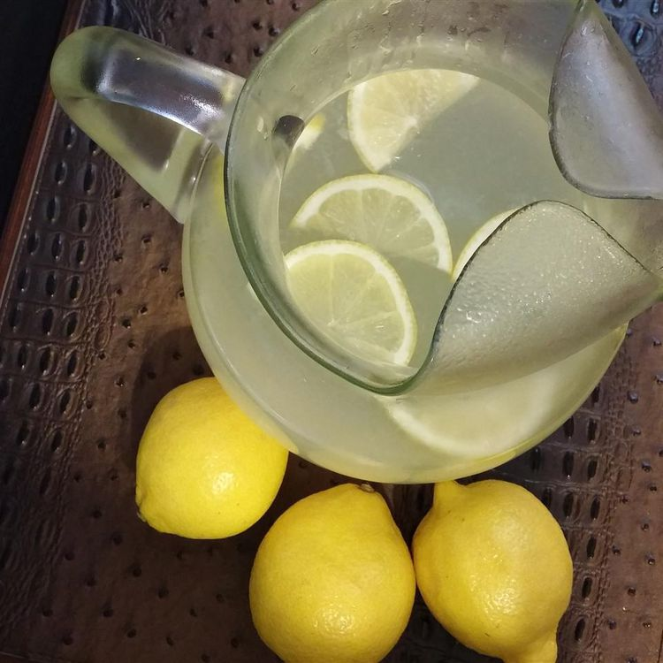

Lemonade, perfect summertime drink!

To make the perfect lemonade you will need:
- 1 and 3 fourths a cup of sugar
- 1 cup of water
- 9 medium lemons, more or less, to taste
- 7 cups ice cold water
- ice as needed
in order to make lemonade, follow these steps!
- Combine sugar and 1 cup water in a small saucepan. Stir to dissolve sugar while mixture comes to a boil. Set aside to cool slightly.
- Meanwhile, roll lemons around on your counter to soften. Cut in half lengthwise, and squeeze into a liquid measuring cup. Add pulp to the juice, but discard any seeds. Continue juicing until you have 1 1/2 cups fresh juice and pulp.
- Pour 7 cups ice-cold water into a pitcher. Stir in lemon juice and pulp, then add simple syrup to taste. Add ice.